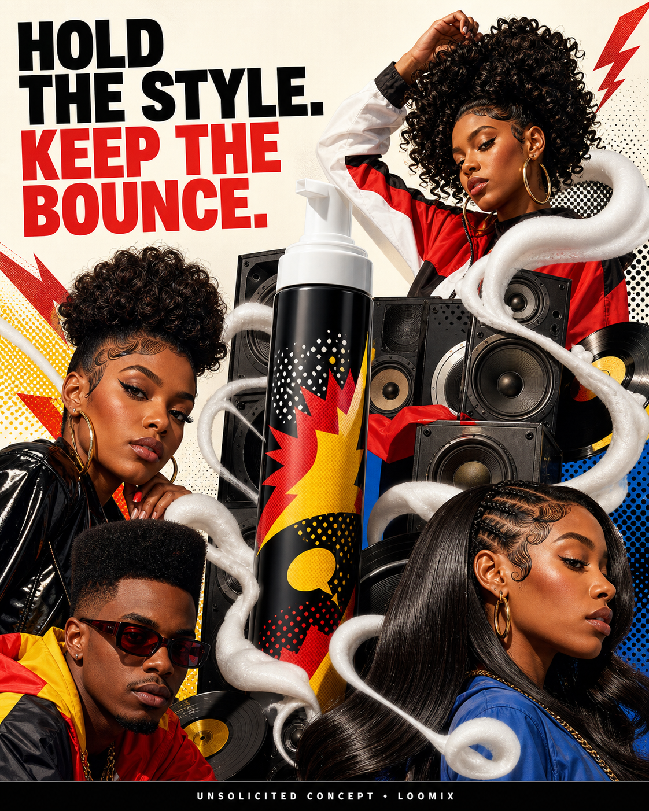

Concept created by LoomixUnsolicited concept
The DouxReels + TikTok9:168 seconds
MOUSSE DEF Texture Foam — Hold the Style. Keep the Bounce.
A towering block-party sound system sends bass waves made of airy mousse through curls, edges, and sleek strands. Every look holds its shape while staying soft, shiny, touchable, and visibly in motion.
Create with LoomixView official product
Hook options
“Hold the style. Keep the bounce.”
“Definition that moves with the beat.”
“No helmet hair energy.”
8-second storyboard
Open on a quiet wall of vintage speakers.
Pump one airy spiral of MOUSSE DEF.
Turn the foam into a visible bass wave.
Send it through curls, edges, and sleek strands.
Show every style holding while still bouncing.
End on the bottle, speakers, hook, and CTA.
Caption direction
A culture-forward block-party visual where flexible hold hits like bass: defined enough to last, light enough to keep every style moving.
Made for rapid testing
Loomix turns one product image into a storyboard, short-video direction, captions, and ready-to-post ad copy.
This is an unsolicited creative concept made by Loomix for demonstration purposes. Loomix is not affiliated with or endorsed by The Doux.